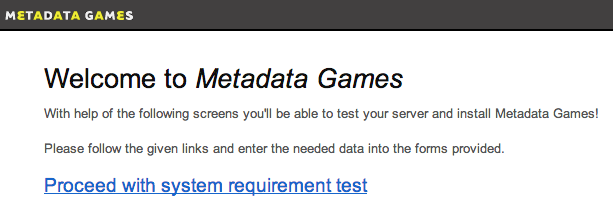
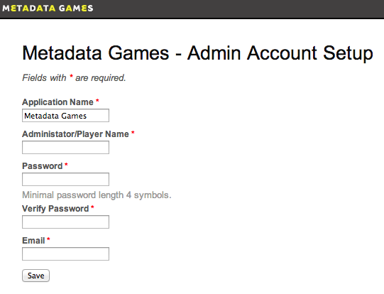
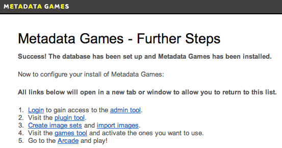

Last modified: 12/11/2012
Currently you can grab a copy of Metadata Games source code by downloading a git clone of the metadatagames repository at gitorious.org.
Before installation, have a system administrator configure your server's php.ini file to make sure its PHP memory limit is at least 128 MB. We currently recommend 256 MB or more if you are looking to import and use more than 10,000 images.
Metadata Games is accessible using the latest web browsers (as of this writing):
Once you have downloaded the Metadata Games software, open a web browser and navigate to its folder location. Click "Proceed with system requirement test" to run a test of server capabilities. This will ensure that your server can support the required Yii framework.

(NOTE: We highly recommend that ImageMagick be installed and configured on your server.)
If there are any errors found during the system requirement test, please check the Memo column for details. After resolving any incompatibilities, reload the page and look for any further errors.
NOTE: Particular directories and files will need to be writable by the webserver user. On Debian/Ubuntu systems, this user is usually 'www-data' while RedHat and derivatives often use 'apache'. The fix-perms.sh script located in the tools/ directory may be of help. Please read the code carefully before use!
If your server passes the system requirement test, you may then click "Proceed with database installation", bring you to the Database Setup page.
You will need to fill out the Database Name, Database User Name, and Database Host Name fields for the database you wish to use. If the database has a password, enter this in the Database Password field as well. If you do not have this information, please contact your system administrator. Leave the Database Host Port field blank. If you have not already created a database for use with Metadata Games, please do so now.
After entering the required information, click "Submit".
At the "Admin Account Setup" page, fill out the following fields:
Application Name - The name for your install of Metadata Games. You may change this field to reflect how you will use Metadata Games (e.g., by institution: "Metadata Games - Dartmouth College"; by role: "Home Movies Project", "Jones Family History"; etc.)
Administrator/Player Name - The name of the administrator's account.
Password - A password for the administrator's account.
Verify Password - Enter the same password, for confirmation.
Email - A valid email address for the administrator.

Then click "Save". Congratulations! You have successfully installed Metadata Games! Now on to configuring your system.

We recommend to use ImageMagick as graphics tool kit to manipulate images. If you have it installed on your server you can configure MG to use by following the installer as described above. Once the installations is done you'll have to change the configurarion manually by hand. Please open the file /www/protected/config/main.php in a text editor and search for:
'image'=>array(
'class'=>'ext.image.CImageComponent',
'driver'=>'GD',
),
to activate ImageMagick, replace 'GD' with 'ImageMagick' as in the example below.
'image'=>array(
'class'=>'ext.image.CImageComponent',
'driver'=>'ImageMagick',
),